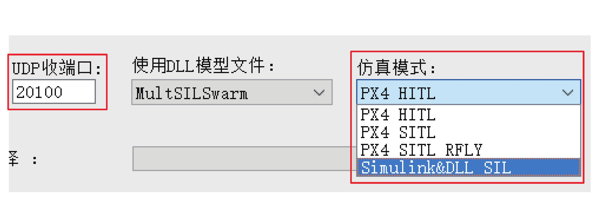
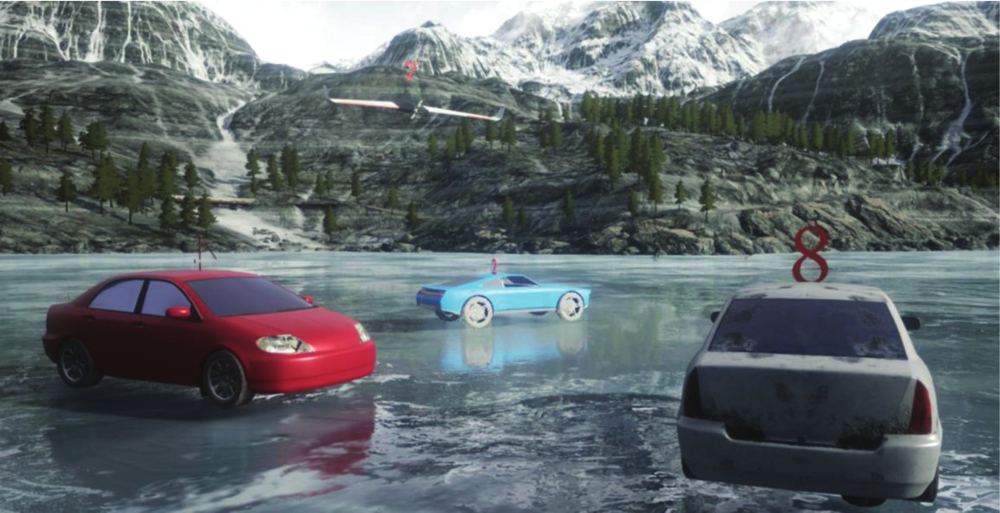

4. 集群¶
4.1. 多机集群仿真¶
CopterSim 还支持多机集群仿真功能。只需开启多个 CopterSim，并设置好每个飞机的 ID 值即可。在硬件在环仿真模式下，每个 CopterSim 需要连接一个 Pixhawk 自驾仪，然后分别单击“开始仿真”按钮，即可分别开始仿真。三维视景显示软件（只支持 UE4 开发的视景）会自动从局域网中接收所有的飞机数据，并集中显示在同一个场景中。因此，目前这种分布式仿真构架理论上支持任意多个飞机的硬件在环仿真。限制因素主要在以下几个方面：计算机 USB 接口数量（每个 Pixhawk 自驾仪会占用一个 USB 接口）、计算机内存大小（每个 CopterSim 会占用一定的内存空间）、计算机处理器速度（性能需要保证每个 CopterSim 都能实时运算）。
图 4.1 CopterSim 多机集群仿真¶
目前，CopterSim 支持两种方式多开运行。
（1）手动打开方式，每次双击 CopterSim.exe 可以打开一个仿真程序(飞机 ID 会自动累加，不需要手动设置)，重复 N 次可以打开 N 个仿真程序，依次连接串口，并单击开始仿真。（2）通过 bat 脚本，一次打开任意多个 CopterSim 并完成软件配置、串口选择与自动运行。用文本编辑器打开“CopterSimAutoStartScriptTemp.bat”脚本，可以看到如下内容：
start CopterSim.exe 1 1 20100 0 0 1 0 235 0 0 4
start CopterSim.exe 1 2 20102 0 0 1 0 235 0.5 0 5
start CopterSim.exe 1 3 20104 0 0 1 0 235.5 0 0 6
start CopterSim.exe 1 4 20106 0 0 1 0 235.5 1 0 7
上述代码展示了一次打开四个CopterSim 的 Windows 批处理 bat 脚本。和下图 一一对应，CopterSim.exe 后面跟的第 0 位数字表示“是否自动开始仿真”；第 1 到 9 位对应了所示 CopterSim 主界面的高级功能的每个选项值；第 10 位对应了 Pixhawk 自驾仪的 USB 串口号。
图 4.2 CopterSim 多开脚本序号对应关系¶
4.2. 仿真模式设置¶
除了硬件在环仿真，CopterSim 还支持其他的仿真模式，来提高测试效率，主要支持的仿真模式有以下几种。
（1）不同自驾仪系统的软硬件在环仿真。本平台不仅可以用于PX4自驾仪的仿真，也可扩展到其他自驾仪系统（例如Ardupilot），只需在这一栏选择对应的自驾仪和仿真模式即可。（2）连同 Simulink 进行软件在环仿真。由于 Simulink 中每增加一个多旋翼需要复制一份多旋翼的副本，导致多机仿真的时候运行速度非常慢，不便于实时观察仿真效果。因此，可以通过代码生成的方式，将模型生成 DLL 模型文件放在 CopterSim 中运行，然后 Simulink 通过 UDP 收端口从 CopterSim 中获取传感器数据并发送控制指令，从而形成闭环。在多机集群仿真时， UDP 收端口号需要保证不同的 CopterSim 各不相同，然后 Simulink 通过设定的端口号与 CopterSim 通信。需要注意的是，在DLL 模型文件生成例程中，还提供了生成模型和控制器的完整飞行器模型，可以实现直接发送速度指令，进行顶层决策系统的软件在环仿真。图 4.3 CopterSim 仿真模式的设置¶
（3）连接 PX4 自驾仪进行软件在环仿真。PX4 自驾仪的SITL模式还支持编译成可以在计算机中虚拟运行的模式，在一台计算机中运行 N 个 PX4 自驾仪软件，同时打开 N 个 CopterSim，设置好两两之间的端口连接，即可在同一台计算机上进行多机集群的软件在环仿真。
4.3. 多计算机分布式仿真¶
单台计算机的计算能力与内存空间等都是有限的，无法支持任意多机的集群仿真。因此，CopterSim 还提供了多台计算机实现局域网分布式仿真的功能。
图 4.4 CopterSim 局域网分布式仿真构架¶
勾选 CopterSim 主界面的“联机”按钮，即可开启局域网广播功能，每个 CopterSim 的飞行状态会被局域网内所有计算机接收到。因此，只要在局域网内安置足够多的计算机，每台计算机上运行一定量的硬件在环仿真或软件在环仿真程序，本平台可以实现任意多机的集群分布式仿真。同时，每台计算机上支持开启多个三维视景程序，从多个视角观察所有飞机的飞行效果。注意，如果不勾选“联机”按钮，CopterSim 的飞行信息只能被本台计算机接收到，这样不会干扰其他计算机的仿真效果，适用于实验课程使用。
4.4. 多机集群的 Simulink 控制¶
对于多机集群仿真而言，通信和实时控制是一件困难的事情。针对上述需求，我们在本平台的高级功能基础上，开发了一系列的课程和例程。
图 4.5 Simulink 多机集群控制源码¶
主要实现的功能有以下 4 个。
（1）初步软件在环仿真。我们提供了 Simulink 的 UDP 接口来直接向 UE4 三维视景软件发送多个多旋翼的显示信息。通过提供的接口，一方面在单个多旋翼进行软/硬件在环仿真时，可以生成运动或静止的障碍物。另一方面，它提供预览多机飞行效果的机会，从而制定出最合理的运动轨迹。图 4.6 Simulink 异构无人系统视景¶
（2）集群控制算法的软件在环仿真。在 Simulink 中通过UDP 协议，向带有控制闭环 (由 Simulink 与模型一起生成，或者与 PX4 SITL控制模式相连接)的 CopterSim 多旋翼模型，发送顶层的速度或者位置等控制信息，同时接收运动状态信息，进行多机集群的软件在 环仿真。（3）集群控制算法的硬件在环仿真。在 Simulink 中通过 UDP 协议，向所有 Copter- Sim+Pixhawk 的硬件仿真闭环系统，发送速度或位置等顶层控制的 Mavlink 消息，形成多机集群的硬件在环仿真。我们提供的源码中有在 Simulink 中实现打包和解包 Mavlink 协议的函数，然后 CopterSim 有自动转发Pixhawk 自驾仪的Mavlink 消息包的功能。因此，用户可以控制每个 Pixhawk+CopterSim 的硬件在环系统去完成任意任务。（4）通过 Simulink 实时控制真实多旋翼集群。在 Simulink 中通过数据传输模块接收和发送 N 个串口的 Mavlink 消息，实现多个真实多旋翼系统的实时控制。这里 Simulink相当于一个地面控制站的功能，用于控制真实集群飞行系统。相对于用 C/C++ 开发集群控制平台，Simulink 能够更直观地观察集群的效果，且能够实时调整控制器参数。而且，Simulink 也支持生成C/C++ 代码程序，来提高运算速度。
通过上述的软件模拟 → 软件在环仿真→ 硬件在环仿真→ 实际集群系统控制，开发者可以循序渐进地实现集群控制算法的开发、仿真与真机实验，大大提高了开发效率。